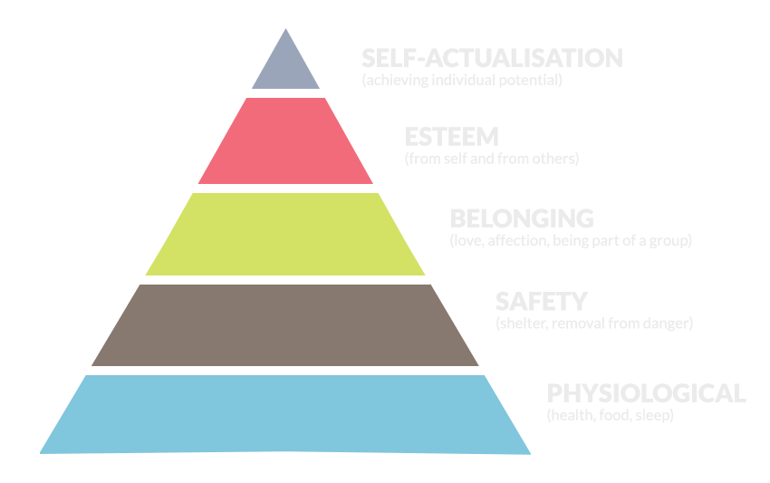
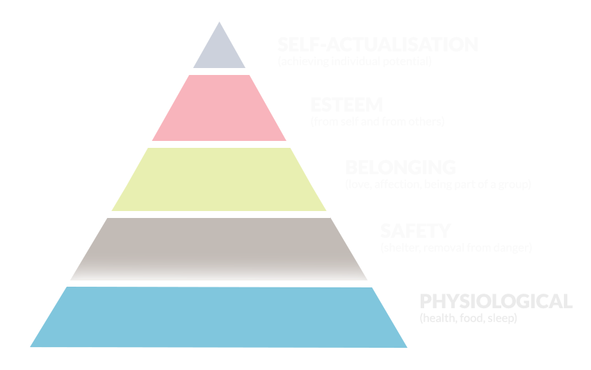
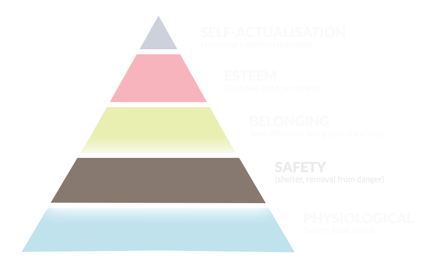
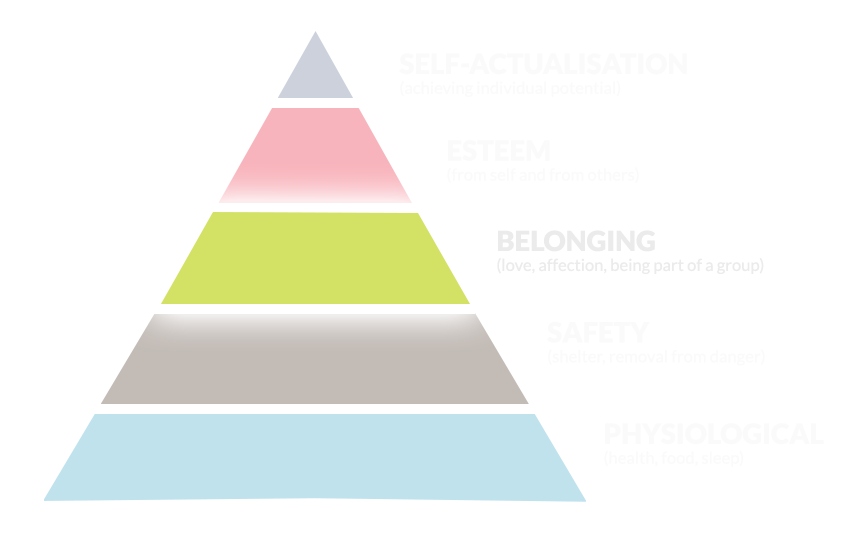
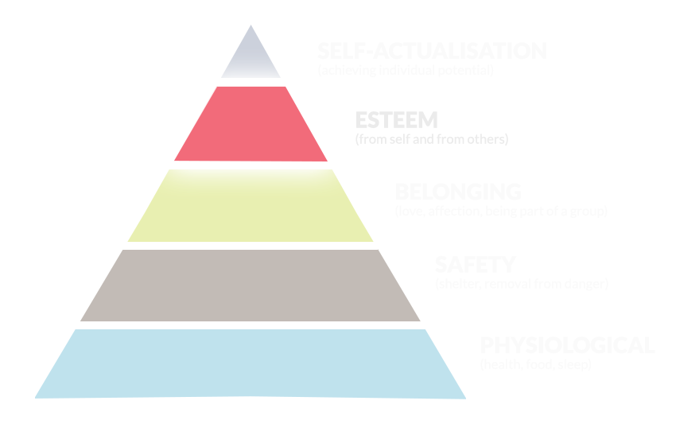
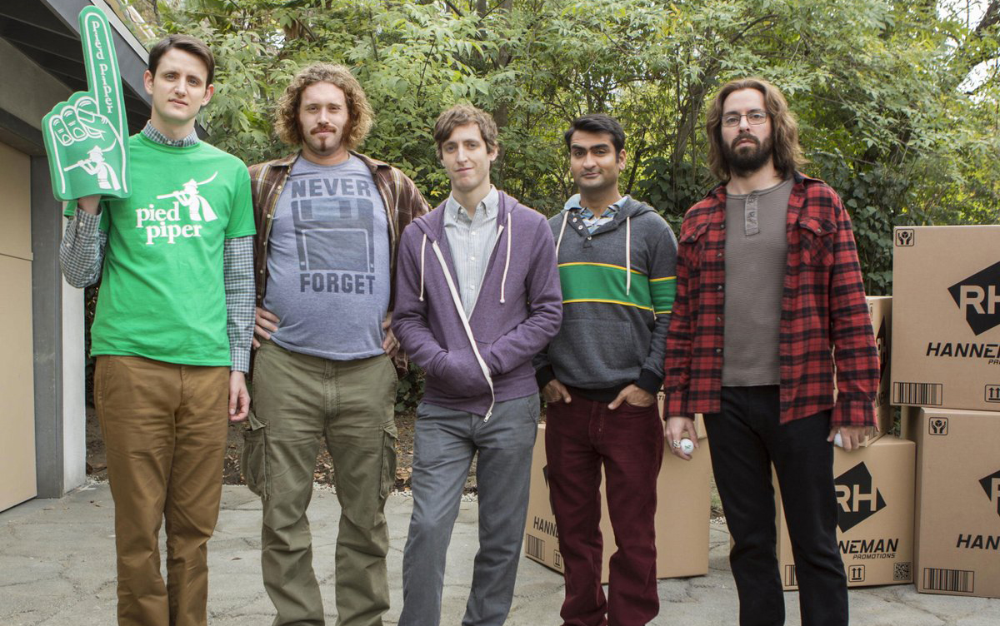

“We keep moving forward, opening new doors, and doing new things,
because we’re curious and curiosity keeps leading us down new paths.” -
Walt Disney
Staying Inspired
The Power of Tech Communities
Thanks to Jon, Lee, Boon
& all the wonderful volunteers!
"Kansas City Developers Conference cultivates community among techies"
- via Startland News
Jennifer Wadella
@likeOMGitsFEDAY
JavaScript Developer
Accidental Community Organizer
Founder of Kansas City Women in Technology
CoderDojoKC
Coding & Cupcakes
Coding & Cocktails
Midwest Dev Chat Currator
Twitter warning: Bachelor tweets
self taught developer working at admissions software company
always organized groups of people
Conference Hype
Are You Inspired?
So day one of KCDC, day two if you've been at the precompilers. How is it?
Have you seen some amazing talks? How do they make you feel? Are you inspired?
Being at a technical conference can be a wonderful thing. You get to hear from
brilliant speakers, hear about exciting new technologies, and share the passion
for your craft with those around you. The halls buzz with excitement and chatter,
it can be hard not to walk away feeling empowered.
Are you ready to change the world? Are you raring to going to go home and try that
new tech stack? Are you inpsired?
How will you feel the day after?
And Monday?
And Tuesday?
And Wednesday?
And the next week?
Slowly, these feelings may start to fade. Will you return to the regular pace of your day?
Will you realize your team isn't ready to implement that new deployment process you were so inspired by?
Will you remember how you felt during that talk that validated the way you write code, or lead a team,
or make technical decisions? When will you return to the hum drum of completing those tickets in your
sprint and picking up the kids from daycare and remembering to get the propane tank and was that
kid's birthday party on Saturday or Sunday and did I respond to that email and why is QA not seeing
the changes I just deployed?
When you're on support duty next week working on bugs, will you be putting those newly learned best-practice
techniques to use?
Will you still be working on that side project you were inspired to change the world with after seeing
that awesome Arduino demo about dogs sending selfies?
Will you still be sharing insights you learned at KCDC with your significant other at the dinner table?
How long will you stay inspired?
Hello World.
Can you remember your first moment?
Hello world is often the first app a developer ever writes.
I run a lot of programs teaching kids to code.
When you started programming, or the last time you tackled something new,
do you remember your "hello world moment"?
Coding & Cupcakes, May 2015
Are You Inspired?
Clearly reflecting on your hello world moment every time you're feeling
uninspired would get old and quite frankly obnixous.
How do you get that inspiration back?
Communities to the rescue!
Why do Communities do this for us?
Maslow's Hierarchy






Acceptance. Maslow's freaking heirarchy.
physiological - health, food, sleep... the most rudimentary things
we need to survive. Once those needs are satisfied, we move on to safety .
accepted and to be part
of a community. The next thing we strive for is self-esteem, confidence, achievement - respect from ourself and others.
self-actualization - achieving your potential. According to Maslow,
a person is always “becoming” and never remains static in these terms. In self-actualization a
person comes to find a meaning to life that is important to them. I don't run into many developers
who are happy with how they are now; they're always looking to learn, grow, and improve. This may
explain the discontent you feel when you're doing maintenance, or on a project that doesn't require
any learning or growth.
Communities help you find your people.

People who understand the developer life
Know what the highs and lows are like
Can share their highs
Community
com·mu·ni·ty [kuh-myoo-ni-tee]
Community is defined as "a social, religious, occupational, or other group sharing common characteristics or interests and perceived or perceiving itself as distinct in some respect from the larger society within which it exists".
Examples
work teams
disciplines
online communities
user groups
How to get involved
Make connections. "networking for developers"
Lunch it up. And invite the new person!
Evangelize your workplace.
Get on social media.
Answer questions.
Actually go to stuff...
Are You Inspired?
Do you want to start your own community?
Have you noticed there's not a community for your flavor of tech?
Is there a niche you're a part of that needs representation?
Not from KC?
Tips for Building Communities
Just ask.
Become an email master.
Communicate well.
Be consistent.
Prioritize the needs of your community.
Don't be afraid to delegate or change the guard.
emailing is hard, esp as a developer. - inbox snooze, apps like MixMax
communicate well: people like to be informed and know whats going on.
Ask for feedback, but be prepare for critism. It's how you'll grow
Fresh persectives are key.
Next Steps
Check out the user group tables.
Join a slack channel: Midwest Dev Chat 700+ devs & growing
Come to the attendee party.
Attendee Party
No Other Pub
5-7pm
So here's the BIG CTA. Just one step. Come to the attendee party tonight.
If you've got kids to take care of, text or call your significant other, and
ask nicely to take a few hours to network. Does your cat need to be fed?
Text a roommate or friend. D&D group meeting? Ok, I don't know if I can talk you
into blowing that off, I know how hardcore my friends are about that night. But you
should come anyway.
Tell that speaker how much you enjoyed their talk. Take the chance to pick their brain.
Talk to someone new. Reconnect with someone old. And finally,
be inspired by someone else's story, or better yet, inspire someone with you own.
Come join the community.